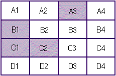
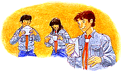

Tipo de Actividad:
Juego
Duración:
2 horas
Lugar: En el
local de Unidad
Participantes:
La Unidad
El 19º Jamboree Scout Mundial invita a las Patrullas de todos los países
a vivir un momento de encuentro en el que pueden conocer y compartir la
riqueza de
diferentes culturas.
Es una excelente ocasión para que juntos renovemos nuestro compromiso
por la paz mundial. De acuerdo con este objetivo, múltiples talleres
que se relacionan con la paz y la comprensión intercultural, que
estarán abiertos a todos los participantes, han sido programados
para el evento.
Presentamos este juego para que tú y tu Unidad se aproximen a estos
temas y se preparen para abordarlos.
Introducción
La paz tiene su punto de partida en nosotros mismos y la vida diaria. Frecuentemente,
se presentan situaciones conflictivas que nos enfrentan a discusiones con
otras personas. Es importante que cada uno se cuestione: ¿cuál
es el mayor obstáculo para encontrar una solución? ¿Cómo
me comporto en estos casos? ¿Cuáles son mis estrategias? ¿Cómo
reaccionan los demás? Éstas son algunas de las preguntas que
tendrán que responder ante una circunstancia ficticia en la que hay
TERRITORIOS EN DISCUSION.
Antes de la Actividad
Para preparar este juego, los responsables adultos deben seguir los pasos
que se enumeran a continuación.
1. Deben confeccionar el tablero conforme a las instrucciones:
a) En un cartón de 100 centímetros de largo por 50 centímetros
de ancho se dibuja el mapa de un lugar de campamento imaginario. Para hacer
los trazos deben guiarse por la información que se extrae del Anexo
4. Recomendamos cuidar que en el tablero se encuentren representadas las
características geográficas requeridas por el juego como la
quebrada en A1, la vieja construcción en B4, la caída de agua
en C3 y la laguna en A3.
b) Hay que delimitar claramente 16 territorios, anotando los números
que corresponde (Anexo 1).
c) Siguiendo las indicaciones del Anexo 1, se colocan pequeñas banderas de colores (azul,
amarillo, rojo, verde). Para esto, pueden emplear alfileres con trozos de
cartulina o tela. La idea es que resulte fácil cambiar la posición
de las pequeñas banderas en el tablero.
2. Los encargados deben preparar cuatro copias diferentes de Antecedentes
con los datos que se encuentran en el Anexo 4 (una para cada Patrulla o equipo).
3. Además tienen que prever una copia de la Pauta de Evaluación
Personal del Anexo 3
para todos los participantes.
NOTA: Es fundamental que los scouts no conozcan el reglamento antes de
jugar.
Realización de la Actividad
| 1. |
El juego considera cuatro equipos. Si la Unidad se
compone de 4 Patrullas, cada una constituye un equipo y recibe un color
(azul, amarillo, rojo, verde). |
| 2. |
El director hace una introducción narrando
una circunstancia ficticia: Se aproxima un campamento y cada Patrulla de
la Unidad se ha propuesto una meta que sólo se puede lograr aprovechando
las condiciones naturales que ofrece el terreno. |
| 3. |
Entonces, los encargados presentan el tablero con
las delimitaciones y las pequeñas banderas, explicando que es el
mapa del supuesto lugar para el campamento. De inmediato, los equipos pueden
observar que sus posesiones están dispersas en el tablero. |
| 4. |
Los responsables adultos entregan a cada Patrulla
los antecedentes que le corresponde: las características de sus posesiones
y la meta que tiene que cumplir en el campamento imaginario. Ningún
equipo conoce los antecedentes que reciben los otros. |
| 5. |
Hay que tener a mano hojas blancas y lápices
para que las Patrullas puedan registrar sus estrategias, acuerdos e intercambios
territoriales. Cada equipo debe designar un secretario. |
| 6. |
El director del juego informa que hay tiempo para
que cada Patrulla pueda leer sus antecedentes y elaborar un plan de acción
que le permita cumplir su meta. Éstas van a parecer contrapuestas,
por lo tanto, el equipo de Unidad debe solicitar a los jugadores que hallen
la mejor manera de resolver los conflictos. Entonces, cada Patrulla tiene
que negociar con las demás, tratando de conseguir los territorios
que exige su plan de acción. |
Las transacciones se desarrollan libremente entre los equipos. La idea es
que cada uno intente acercarse al máximo a la meta propuesta, aunque
no obtenga todos los territorios requeridos.
Duración sugerida: 30 minutos
 7. Una vez que se acaba el tiempo
asignado, las negociaciones finalizan y los responsables adultos distribuyen
copias de la "Pauta de Evaluación Personal" (Anexo 3) a todos los participantes
para que respondan el cuestionario. 7. Una vez que se acaba el tiempo
asignado, las negociaciones finalizan y los responsables adultos distribuyen
copias de la "Pauta de Evaluación Personal" (Anexo 3) a todos los participantes
para que respondan el cuestionario.
Duración sugerida: 5 a 10 minutos
8. Luego de esta etapa, el director del juego invita a los jóvenes
a exponer los
resultados obtenidos
en forma individual y grupal. Cada equipo informa a la Unidad qué
meta tenía al iniciar el juego, especificando los triunfos logrados
después del período de negociación. Los responsables
adultos también pueden formular las preguntas de la pauta de evaluación
en voz alta y motivar a los scouts para que expresen libremente sus opiniones.
En esta sesión plenaria, además, la Unidad debe pensar cuáles
son las ventajas e inconvenientes de las estrategias utilizadas para resolver
los conflictos y cómo debe operar la cooperación para que
todos ganen.
Duración sugerida: 20 minutos
| 9. |
Los encargados dan a conocer la SOLUCION PROPUESTA
del Anexo 2, de manera
que todos los participantes puedan visualizarla. |
| 10. |
Finalmente, los responsables adultos invitan a
las Patrullas a comparar la solución propuesta del Anexo 2 y el resultado obtenido por
la Unidad. Pueden motivar la discusión con preguntas como:
 ¿En qué se diferencian y/o se asemejan
ambas alternativas? ¿En qué se diferencian y/o se asemejan
ambas alternativas?
¿La solución propuesta del Anexo 2 es más o menos equitativa
que el resultado obtenido por la Unidad?
¿Qué otra solución se puede
formular para que todos los equipos logren sus metas?
|
Esperamos que este juego les haya servido para lograr un mayor entendimiento
en la Unidad, más preparación para enfrentar constructivamente
los conflictos que se presenten en el futuro. Hay que seguir adelante y
continuar la búsqueda de nuevas dinámicas de cooperación,
dispuestos igualmente a satisfacer algunas expectativas y sacrificar otras.
Anexo 1
ASIGNACION DE TERRITORIOS

Anexo 2
SOLUCION PROPUESTA
Para satisfacer a todos los equipos
con alguna cuota de sacrificio:
| 1. |
Equipo Azul: logra 4 sitios contiguos, manteniendo
A1 para construir el
puente; sin embargo, no obtiene A2 y B2 como deseaba. |
| 2. |
Equipo Amarillo: logra 3 sitios contiguos a A3, conservando
la posibilidad de construir el Sendero Natural en el sector deseado; pero,
no obtiene A4 y B4. |
| 3. |
Equipo Rojo: logra reunir 6 sitios y se queda con
el sector fundamental
para la construcción de una rueda de agua. No obtiene B3. |
| 4. |
Equipo Verde: se queda con los dos sitios que necesita,
manteniendo B4 para instalar su bodega. |

Anexo 3
PAUTA DE EVALUACION PERSONAL
1. ¿Cómo calificas los
resultados que obtuvo tu equipo?
a) Muy buenos
d)
Deficientes |
b) Buenos
e)
Malos |
c) Regulares |
2. ¿Por qué los calificas así?
3. Según tu criterio, tu equipo:
| a) Ganó |
b) Empató |
c) Perdió |
4. ¿Por qué lo consideras así?
5. ¿Se quedaron con los territorios indispensables
para el cumplimiento de la meta?
6. ¿Lograron la cantidad de sitios que deseaban
y contiguos entre sí?
7. ¿Cómo consideras la relación
entre lo obtenido y lo cedido por tu equipo?
a) Obtuvo más de lo que cedió
c) Obtuvo menos de lo que cedió |
b) Obtuvo tanto como cedió |
8. ¿Cómo enfrentaste las diferencias?
- Peleando tu posición
- Cediendo ante las presiones de los otros
- Negociando, tratando de llegar a un término medio
- Otra forma; detalla:
9. ¿Cómo te sentiste aplicando esa
estrategia?
Anexo 4
ANTECEDENTES 1 EQUIPO AZUL
El lugar de campamento se caracteriza por una topografía irregular.
Ustedes creen que es una oportunidad para desarrollar una serie de construcciones
en altura, para lo cual se han preparado todo el año.
Los sitios que les han asignado están dispersos sobre el plano. Éstos
son A1, C4, D1 y D2.
Ustedes han descubierto que los sitios A1, B1, A2 y B2 son
planos y permiten realizar las construcciones deseadas. Además, en
A1 existe una quebrada en la que es posible construir un puente,
que es la meta más importante de la Patrulla.
ANTECEDENTES 2 EQUIPO AMARILLO
Ustedes se han preparado durante todo el año para realizar, en este
campamento, un Sendero Natural en su sector. Pretenden colocar los
nombres de todas las especies que allí se encuentran.
Los sitios que les han asignado son A3, B1, C1 y C2.
En el sitio A3 existe un bosque en el cual se encuentra la única
laguna del lugar; allí es posible construir un observatorio natural
de animales. Este sitio es fundamental para cumplir la meta de la Patrulla.
Quisieran, además, obtener los sitios B3, A4 y B4.
ANTECEDENTES 3 EQUIPO ROJO
Ustedes han preparado un proyecto de tecnología apropiada para crear
corriente eléctrica. La idea es contar con luz en su sector mediante
la instalación de una dínamo en una rueda de agua.
Los sitios que les han asignado son A4, B2, C3 y D3.
En el sitio C3 existe una caída de agua ideal para
la instalación de este artefacto. Además la dínamo
tiene capacidad para iluminar un total de 6 sitios, por lo tanto,
sería ideal contar con los sitios B3, C2 y D2.
ANTECEDENTES 4 EQUIPO VERDE
Ustedes se han propuesto realizar labores de servicio a la comunidad
local y han hecho una serie de contactos anticipados con sus representantes.
Los sitios que les han asignado son A2, B3, B4 y D4.
Para lograr su meta, ustedes necesitan un sector amplio donde instalar una
bodega de materiales. No es necesario que tengan 4 sitios, pero deben mantener
B4 donde existe una vieja construcción que les servirá
como bodega. Lo ideal es contar con los sitios contiguos a B4, es
decir, A4 y C4.

 Tipo de Actividad:
Taller Tipo de Actividad:
Taller
Duración:
2 horas
Lugar: En el
local de Unidad o en campamento
Participantes:
La Unidad
En la actualidad, existe consenso en el mundo en
tornoa la afirmación que todos los hombres son iguales
en dignidad y derechos. Sin embargo, son esencialmente diferentes en sus
expresiones culturales y personales. Dentro de este contexto, reviste gran
importancia la paz como la única atmósfera en la cual es posible
obtener la felicidad, que permite el desarrollo individual y, al mismo tiempo,
la expresión de lo diverso.
El 19º Jamboree Scout Mundial es un evento que pretende reunir a jóvenes
de distintos países bajo el lema "Juntos construyendo la Paz".
Por esto, queremos sugerir que cada uno reflexione y se pregunte, por ejemplo,
qué significa la paz y cómo es posible promoverla en los ambientes
más próximos. A través de este taller, proponemos la
realización de un COMPROMISO POR LA PAZ que se pueda unir
al de muchos otros scouts de todo el planeta.
Antes de la actividad
El equipo de Unidad tiene que considerar que
el taller exige un trozo de papel, lápiz y sobre para
cada participante. También requiere un rotafolio.
Anticipadamente, los responsables
adultos deben preparar una motivación. Para esto, pueden reunir fotos
y artículos de diarios y revistas que describen situaciones actuales
en las que la paz se encuentra amenazada. Recomendamos cubrir una amplia
variedad de conflictos, incluyendo aquellos que afectan el escenario internacional,
regional, nacional, local y/o personal.
Realización de la actividad
1. Motivación. La Unidad se reúne en sesión plenaria
y los encargados comparten la información que recopilaron. Nuestra
sugerencia es que sigan el orden que va desde lo global hasta lo particular,
de modo que demuestren que la paz es indispensable en todos los niveles
de la vida en sociedad. La idea es que los asistentes puedan dialogar libremente
y, en forma conjunta, identificar todos los significados del concepto; éstos
se deben anotar en el rotafolio. Para facilitar la conversación,
el director del taller puede señalar algunos ejemplos:
la paz como ausencia de guerra entre naciones
la paz como tregua entre bandos opositores
la paz como un estado de armonía entre
los habitantes de un país
la paz como la expresión de la fraternidad
entre compañeros de escuela
la paz como un ambiente tranquilo y cordial en
la familia
la paz como manifestación de felicidad
interna, por ejemplo, cuando uno dice: "estoy en paz conmigo mismo"
2. Los responsables adultos solicitan a los jóvenes que cuenten a
la Unidad por qué creen que la paz es importante. Cuando todos hayan
opinado, refuerzan la idea expresada en la introducción de este material
para concluir que la felicidad sólo es posible en un ambiente
de paz. ¿Podríamos llegar a ser felices si estamos inmersos
en constantes conflictos como guerras, enfrentamientos y discusiones?
3. A través de una lluvia de ideas, los participantes deben
enumerar acciones concretas para generar una atmósfera pacífica.
El desafío consiste en pensar qué se puede hacer en todos
los casos, en los distintos niveles. La lista también se registra
en el rotafolio.
Duración sugerida: 20 minutos
4. Después de esta reflexión, el equipo de Unidad invita a
cada asistente a hacer un COMPROMISO POR LA PAZ.
Para que los scouts puedan formular un compromiso, el director del juego
les solicita que se concentren en el nivel de la vida personal. Luego les
entrega las siguientes instrucciones:
Buscar un área en la cual
la paz resulta especialmente importante, por ejemplo, la convivencia con
los amigos o los familiares.
Establecer un objetivo y las acciones concretas
para su realización. Los responsables adultos deben cuidar
que los participantes comprendan ambos pasos. Por ejemplo, si alguna persona
quiere ser más receptiva, será necesario que mejore sus habilidades
de comunicación.
En caso de resultar oportuno, se pueden señalar casos:
a) Si alguien desea adquirir un compromiso con la lucha por la paz en el
mundo, es necesario pensar en una alternativa que le permita unir sus acciones
al de otros en un esfuerzo colectivo, por ejemplo, la incorporación
a una organización pacifista.
b) Si alguien prefiere hacer un compromiso por la paz que se manifieste
en su curso del colegio, debe identificar, en primer lugar, las actitudes
de sus compañeros que le molestan y cuáles le hacen sentir
bien. Luego corresponde reflexionar sobre sus reacciones ante ellos. Por
último, debe establecer acciones concretas para colaborar en la creación
de un ambiente de paz: respetar a su par cuando éste expresa su opinión,
recibir las críticas positivamente, promover la negociación
al momento de tomar una decisión, no agredir física ni verbalmente
a otro alumno bajo ninguna circunstancia, etc.
Fijar un plazo para
desarrollar las acciones concretas que permitirán la realización
del objetivo. El plazo no tiene que ser estricto, pero si claro (por ejemplo,
tres semanas, dos meses o un año). Sugerimos ordenar las acciones
concretas previstas y establecer un plazo para cada etapa.
Duración sugerida: 15 minutos
5. Actividad personal. Los encargados entregan lápiz y papel
a cada uno de los asistentes. La idea es que escriban su COMPROMISO POR
LA PAZ, las acciones concretas y los plazos para lograr el objetivo.
Es fundamental que los scouts se sientan libres para escoger un lugar donde
redactar el compromiso tranquilamente.
Durante este lapso de tiempo, los responsables adultos deben estar disponibles
para cualquier consulta. Los participantes también pueden resolver
dudas entre ellos, ya sea en parejas o grupos de tres o cuatro. No hay inconveniente
si algunos prefieren hacer un compromiso conjunto.
Duración sugerida: 15 minutos
6. Actividad de Patrulla. Cuando todos hayan terminado, el director
del taller invita a las Patrullas a reunirse por separado. Acompañados
de un miembro del equipo de Unidad, los integrantes comparten sus respectivos
compromisos por turnos. Recomendamos prever entre 2 ó 3 minutos por
persona y un rato para que el resto de la Patrulla pueda hacer preguntas.
NOTA: Las preguntas pueden ayudar a cada uno a clarificar sus ideas, de
modo que pueda agregar detalles y completar su compromiso. El intercambio
permitirá, además, analizar hasta qué punto un objetivo
es realista y alcanzable.
Duración sugerida: 30 minutos
7. Actividad de Unidad.
Las Patrullas se reúnen nuevamente en sesión plenaria. El
director del taller pregunta si hay voluntarios que deseen presentar su
compromiso al resto de la Unidad. Los oyentes pueden hacer preguntas o sugerencias
constructivas.
Los encargados señalan que todos pueden contar con el apoyo y la
cooperación de la Patrulla o la Unidad para alcanzar su objetivo.
NOTA: La experiencia ha demostrado que se podría producir un debate,
cuestionar si un determinado objetivo, acción o plazo es factible.
Con mucha precaución, los encargados deben procurar que la instancia
no se convierta en una reunión centrada en un solo individuo.
Para concluir, los responsables adultos enfatizan que este compromiso es
personal: nadie más que uno es responsable de su cumplimiento. Por
esto, se trata de un desafío especial.
Duración sugerida: 20 minutos
8. Actividad de Patrulla. Las Patrullas vuelven a reunirse por
separado. Cada scout recibe por parte de un miembro del equipo de Unidad
un pequeño sobre donde debe depositar su compromiso; después
de sellarlo, escribe su nombre en él. Todos los sobres son recogidos
por el encargado que los guarda en los archivos de la Unidad, donde quedan
a disposición de los jóvenes.
Observaciones para los responsables adultos
Es preciso notar que los asistentes van a estar
obligados a revelar mucho sobre sí mismos al redactar su COMPROMISO
POR LA PAZ. Por lo tanto, no se les debe forzar a compartirlo con los
demás integrantes de la Patrulla o la Unidad.
Es importante programar un seguimiento
durante las semanas posteriores a la actividad. Se puede realizar informalmente,
por ejemplo, preguntando a algunos scouts: "¿Cómo les
ha ido con sus compromisos?". También se puede planificar de
una manera más formal, fijando la fecha para una reunión en
la que los participantes comenten sus progresos.
Recomendamos sostener reuniones personales
con cada uno de los jóvenes. La idea es motivarlos para que examinen
su objetivo periódicamente y realicen modificaciones. En todo caso,
el seguimiento no debe convertirse en una actividad mecánica.
Esperamos que este taller les haya permitido adquirir familiaridad con las
distintas dimensiones de la paz. La idea es que tú y tu Unidad comprendan
que la construcción de la paz es una obra con la que podemos colaborar
día a día, a través de la aplicación práctica
de nuestros valores.
Esta actividad ha sido recogida y adaptada
del libro "Juegos para la paz y la Comprensión Humana",
publicado por las Ediciones de Extención Guías y Scouts de
Chile.

SUBIR
[La Autopista
del Valle Verde][Piratas
del Caribe] |